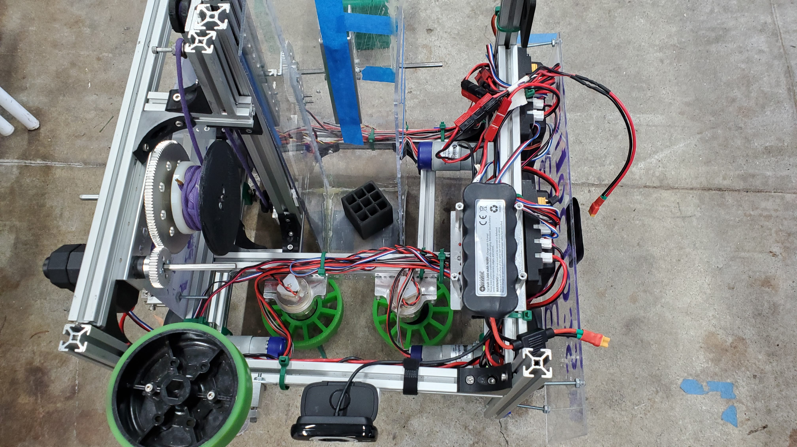

Back in Business
After skipping the 2020 - 2021 due to the COVID-19 pandeming and not doing much in the meantime, Scotbotics decided to make a return to FTC with a new robot, Scotbot.
The Scotbot competed in the 2021-2022 FIRST game, Freight Frenzy and is designed to travel in the arena, intake the cargo with its two rubber wheels, and raise it in a plexiglass scoop which turns to dump it in the "chocolate fountain thingy" (officially referred to as a "Shipping Hub").
- The overall shape of our robot is cubical in order to keep the wheels as far apart as possible to keep the robot physically stable and able to move.
- This year we opted to go with traditional wheels rather that mecanum wheels, as the mecanum were not able to get over the PVC pipe barrier.
- The scoop is made out of plexiglass and hot glue. It is very tall so that when rotated, it extends several inches behind the robot, allowing it to deliver cargo to the inset top level of the "chocolate fountain".
- The robot went through a signifigant redesign between the first and second tournament to reduce the size of the scoop, thus making it lighter.
- The scoop is rotated by a large "El Diablo" servo. We had to build a new all-metal mounting bracket for the servo to handle the load.
- The scoop is attached to an axle rather than directly to the servo. This way, the servo only has to bear the rotational load rather than holding up the entire scoop.
-
Two rubber wheels are responsible for intaking cargo into the scoop.
Throughout the season, the Scotbot went through many refinements to get to its final state. The largest of which reduced the scoop to nearly half its original size, moving the intake to the middle of the robot to accomodate for the new size.

The Scotbot with the new reduced-weight scoop.
Additionally, we installed wider axle-mounts that were in the in the cad files for
The Opportunity. The new mounts were wide enough to have a bushing in both sides, which fixed the wheel-tightness problems we experienced throughout the first tournament.